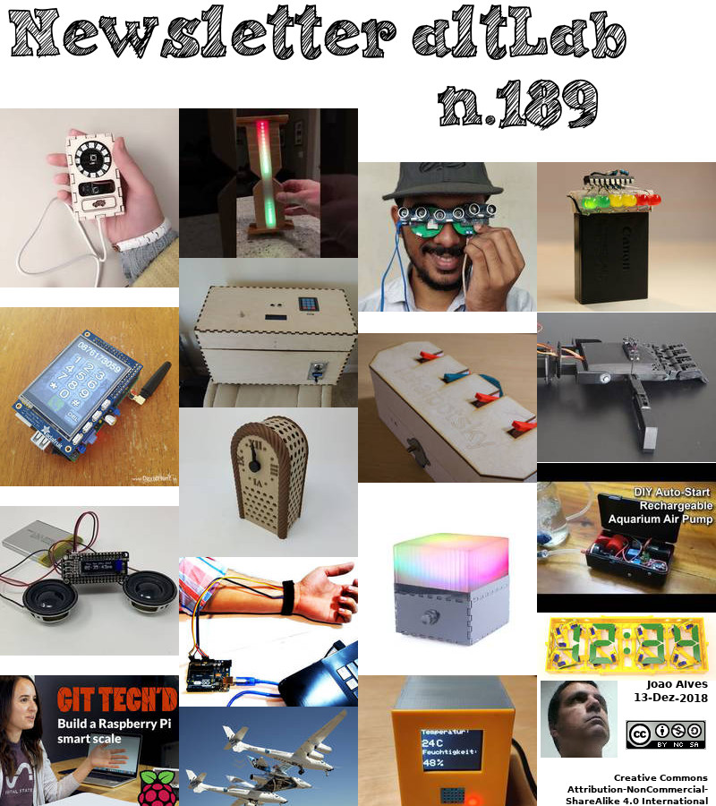

2018-12-13 - Nº 189


Editorial
Esta é a Newsletter Nº 189 que se apresenta com o mesmo formato que as anteriores. Se gostar da Newsletter partilhe-a!
Todas as Newsletters encontram-se indexadas no link.
Esta Newsletter tem os seguintes tópicos:
Faz hoje anos que nascia, em 1780, Johann Wolfgang Döbereiner. Este Químico alemão foi responsável pela observação (1829) de que quando certas tríades de elementos estavam dispostas em ordem crescente de massa atómica, a massa do membro central era aproximadamente a média das outras duas, e intermediária em propriedades químicas entre os outros dois elementos. As tríades agora são encontradas como membros consecutivos dos grupos da tabela periódica. Por exemplo, o peso atómico do bromo (80.970) foi a média aritmética dos pesos atómicos do cloro (35.470) e do iodo (126.470) e as propriedades dos três elementos variaram de maneira ordenada, do cloro ao bromo e ao iodo. Döbereiner encontrou outras duas "tríades" - cálcio, estrôncio, bário; e enxofre, selénio, telúrio. Ele foi um dos primeiros químicos a oferecer instruções de laboratório em química. Ele estudou química geral, farmacêutica e analítica. Além disso, ele inventou uma lâmpada na qual o hidrogénio se inflamava em contacto com uma esponja de platina (1823). Embora a lâmpada tivesse aplicação limitada, Döbereiner estava interessado em catálise em geral. Ele descobriu a acção catalítica do dióxido de manganês na decomposição do clorato de potássio.
Faz também anos hoje que nascia, em 1816, Werner von Siemens. Este engenheiro electrotécnico alemão desempenhou um papel importante na origem da indústria eléctrica moderna. Siemens combinou sua habilidade como inventor de sucesso e empreendedor começando com sua firma, a Siemens & Halske. O seu primeiro trabalho foi na indústria telegráfica, construindo a primeira linha telegráfica importante da Alemanha, depois outras na Europa e na Ásia. A empresa que ele expandiu-se mais amplamente para a tecnologia eléctrica tornou-se a actual empresa multinacional da Siemens. O seu nome de nascimento era Ernst Werner Siemens, até enobrecer como Werner von Siemens.
Faz igualmente anos hoje que nascia, 1844, John Henry Patterson. Este Fabricante norte-americano fundou a NCR (National Cash Register Co.) e ajudou a popularizar a moderna caixa registadora por meio de técnicas de vendas agressivas e inovadoras. Na década de 1870, quando ele e seu irmão Frank estabeleceram um negócio de sucesso vendendo carvão e suprimentos de mineiros, as vendas não registadas eram um problema. Depois de ler uma descrição da caixa registadora projetada por James Ritty e vendida pela National Manufacturing Company em Dayton, John encomendou duas, sem ser vista. Em seis meses eles reduziram sua dívida de US $ 16.000 para US $ 3.000 e os livros mostraram um lucro de US $ 5.000. Essas máquinas modernas tinham resolvido os antigos problemas de desorganização e desonestidade. Patterson ficou tão impressionado que ele comprou a empresa.
Faz também anos hoje que nascia, em 1910, Charles Coulson. Este químico teórico britânico foi conhecido pela aplicação da teoria orbital molecular à ligação química, às estruturas electrónicas de moléculas e ao conceito de valência parcial. Ele desenvolveu muitas técnicas matemáticas para resolver problemas químicos e físicos. A sua teoria orbital molecular trata uma molécula como um todo e estende a teoria quântica atómica com estados "permitidos" de electrões associados a dois ou mais núcleos atómicos. Com essa abordagem, ele explicou a estrutura do benzeno e outros sistemas conjugados, e usando o que ele chamou de valência parcial, ele descreveu a ligação em compostos como o diborano. Depois de escrever sobre Waves (1941) e Electricity (1941), o seu livro Valence (1952) foi altamente influente. Ele também escreveu sobre conciliar visões científicas e religiosas, acreditando que a fé religiosa era essencial na busca da ciência.
Por fim, faz anos hoje que nascia, em 1923, Philip Warren Anderson. Este físico norte-americano partilhou (com John H. Van Vleck e Sir Nevill F. Mott) o Prêmio Nobel de Física de 1977 pelas suas pesquisas sobre semicondutores, supercondutividade e magnetismo. Ele fez contribuições para o estudo da física do estado sólido e a pesquisa sobre interacções moleculares foi facilitada pelo seu trabalho na espectroscopia de gases. Ele concebeu um modelo (conhecido como o modelo de Anderson) para descrever o que acontece quando um átomo de impureza está presente em um metal. Ele também investigou magnetismo e supercondutividade, e seu trabalho é de fundamental importância para a moderna electrónica de estado sólido, possibilitando o desenvolvimento de dispositivos de memória e comutação electrónica de baixo custo em computadores.
E nesta semana que passou ficámos a saber que o Homem conseguiu colocar um segundo objecto no espaço entre estrelas. Trata-se da Voyager 2 da NASA. A Voyager 2 está agora a pouco mais de 18 biliões de quilómetros da Terra. Os operadores da missão ainda podem comunicar com a Voyager 2 ao entrar nesta nova fase de sua jornada, mas a informação - movendo-se à velocidade da luz - leva cerca de 16,5 horas para viajar da sonda para a Terra. Em comparação, a luz emitida pelo Sol leva cerca de oito minutos para chegar à Terra.
Também esta semana ficámos a saber que história foi feita e um sonho há muito esperado foi realizado em Mojave, CA, com a SpaceShipTwo da Virgin Galactic. Este não é o primeiro voo espacial com humanos a ser lançado a partir de solo americano desde a missão final do Space Shuttle em 2011, mas a primeira vez que um veículo tripulado construído para serviço comercial de passageiros chegou ao espaço.
Ainda esta semana ficámos também a saber que a sonda chinesa Chang'e-4 entrou na orbita da Lua. Se a missão for bem sucedida, esta sonda será a primeira a aterrar e a explorar o chamado "lado negro da Lua". Ela irá percorrer a superfície lunar, examinará a composição da Lua.
Na Newsletter desta semana apresentamos diversos projetos de maker assim como um modelo 3D que poderá ser útil. É apresentada a revista newelectronics de 11 de Dezembro e o livro "Book of Scratch".
 João Alves ([email protected])
João Alves ([email protected])
O conteúdo da Newsletter encontra-se sob a licença  Creative Commons Attribution-NonCommercial-ShareAlike 4.0 International License.
Creative Commons Attribution-NonCommercial-ShareAlike 4.0 International License.
Novidades da Semana
NASA's Voyager 2 Probe Enters Interstellar Space
"For the second time in history, a human-made object has reached the space between the stars. NASA's Voyager 2 probe now has exited the heliosphere - the protective bubble of particles and magnetic fields created by the Sun. Members of NASA's Voyager team will discuss the findings at a news conference at 11 a.m. EST (8 a.m. PST) today at the meeting of the American Geophysical Union (AGU) in Washington. The news conference will stream live on the agency's website. Comparing data from different instruments aboard the trailblazing spacecraft, mission scientists determined the probe crossed the outer edge of the heliosphere on Nov. 5. This boundary, called the heliopause, is where the tenuous, hot solar wind meets the cold, dense interstellar medium." [...]
Richard Branson Welcomes Astronauts Home from Virgin Galactic's Historic First Spaceflight
"History has been made and a long-anticipated dream realised in Mojave, CA, today as Virgin Galactic’s SpaceShipTwo, VSS Unity, landed from her maiden spaceflight to cheers from Richard Branson and the teams from Virgin Galactic and The Spaceship Company. Not only is this the first human spaceflight to be launched from American soil since the final Space Shuttle mission in 2011, but the very first time that a crewed vehicle built for commercial, passenger service, has reached space. The historic achievement has been recognised by the Federal Aviation Administration (FAA) who announced today that early next year they will present pilots Mark “Forger” Stucky and Frederick “CJ” Sturckow with FAA Commercial Astronaut Wings at a ceremony in Washington DC. CJ, as a four-time Space Shuttle pilot, will become the only person to have been awarded NASA and FAA wings. Today’s accomplishment has also been recognised by the NASA Flight Opportunities Program, which flew four space science and technology experiments on VSS Unity, making this Virgin Galactic’s first revenue generating flight. The spectacular spaceflight, which was witnessed by a large crowd of staff and their families, as well as special guests and media, saw a 60 second planned rocket motor burn which propelled VSS Unity to almost three times the speed of sound and to an apogee of 51.4 miles." [...]
China's Moon Lander Just Entered Lunar Orbit
"The Far Side A Chinese lander destined for the far side of the Moon — the side that always faces away from the Earth — has now entered lunar orbit, Space News reports. Early Wednesday morning, the spacecraft carrying the Chang’e-4 lander completed its journey from the Earth, which took nearly five days, and settled into an elliptical orbit around the Moon. Lunar Lander If the mission is successful, Chang’e-4 will be the first-ever lander to explore the so-called “dark side of the Moon.” It’ll rove the lunar surface, examine the Moon’s composition, and even dabble in amateur gardening with a small pod that’ll grow seeds and silkworm larvae. To communicate with the Earth, Chang’e-4 will bounce signals off a relay satellite launched earlier this year. Next Step Chinese officials haven’t announced a firm date or location for the craft’s landing, but it’s expected to touch down in early January 2019, probably in the spacious Von Kármán crater. China is already planning Chang’e-5, the mission to come after Chang’e-4." [...]
Outras Notícias
From Fantasy To Reality: Ford's New $45 Million Advanced Manufacturing Center Bringing The Future To Life - Today
"Inside Ford’s new Advanced Manufacturing Center, an engineer stands in front of a 3D printing machine churning out brake parts for Ford’s soon-to-be-introduced Shelby Mustang GT500. Across the room, two team members strap on virtual reality headsets to design and simulate production lines, while another is working alongside a collaborative robot, programming a safer way to install a vehicle part. These technologies are no longer simply a Hollywood vision of the future. For Ford, which has been breaking new ground in auto production for more than a century, they are critical tools and technologies to improve the complex and demanding task of building cars and trucks. And this is all happening every day under one roof at the company’s new $45 million Advanced Manufacturing Center in Redford. “More than 100 years ago, Ford created the moving assembly line, forever changing how vehicles would be mass-produced,” said Joe Hinrichs, Ford’s president of Global Operations." [...]
Asteroid Bennu Had Water! NASA Probe Makes Tantalizing Find
"It looks like NASA chose the right space rock for its asteroid-sampling mission. The agency's OSIRIS-REx probe, which just arrived at Bennu last week, has already found hydrated minerals on the 1,640-foot-wide (500 meters) near-Earth asteroid, mission team members announced today (Dec. 10). The discovery suggests that liquid water was once plentiful in the interior of Bennu's parent body, which scientists think was a roughly 62-mile-wide (100 kilometers) rock in the main asteroid belt between Mars and Jupiter. (Bennu is likely a pile of rubble that coalesced after a massive impact shattered that larger object hundreds of millions of years ago.) [OSIRIS-REx: NASA's Asteroid-Sampling Mission in Pictures] OSIRIS-REx's main goal involves helping scientists better understand the solar system's early days and the role that asteroids like Bennu may have played in delivering water and the chemical building blocks of life to Earth. So, the water find is big news for the mission team." [...]
NVIDIA Jetson AGX Xavier Module for Next-Gen Autonomous Machines
"Delivery robots that speed orders right to your door. Manufacturing robots that collaborate with humans. Handheld DNA sequencers that help scientists save crops from disease. These machines are among the first to make the leap from sci-fi into reality, thanks to the latest advances in the NVIDIA Jetson AGX Xavier platform. And the massive AI capabilities powering them is moving within reach of a multitude of devices with the availability today of the Jetson AGX Xavier module, the latest addition to the Jetson TX2 and TX1 family of products. Developers can use Jetson AGX Xavier to build the autonomous machines that will solve some of the world’s toughest problems, and help transform a broad range of industries." [...]
Ciência e Tecnologia
NUS engineers invent groundbreaking spin-based memory device
"Researchers have discovered that using ferrimagnets can result in dramatically more stable and efficient spin-based memories A team of international researchers led by engineers from the National University of Singapore (NUS) have invented a new magnetic device which is able to manipulate digital information 20 times more efficiently and with 10 times more stability than commercial spintronic digital memories. The novel spintronic memory device employs ferrimagnets and was developed in collaboration with researchers from Toyota Technological Institute, Nagoya, and Korea University, Seoul. This breakthrough has the potential to accelerate the commercial growth of spin-based memory. “Our discovery could provide a new device platform to the spintronic industry, which at present struggles with issues around instability and scalability due to the thin magnetic elements that are used,” said Associate Professor Yang Hyunsoo from the NUS Department of Electrical and Computer Engineering, who spearheaded the project. The invention of this novel spintronic memory was first reported in the journal Nature Materials on 3 December 2018. Rising demand for new memory technologies Today, digital information is being generated in unprecedented amounts all over the world, and as such there is an increasing demand for low-cost, low-power, highly-stable, and highly-scalable memory and computing products." [...]
"Sun in a box" would store renewable energy for the grid
"Design for system that provides solar- or wind-generated power on demand should be cheaper than other leading options. MIT engineers have come up with a conceptual design for a system to store renewable energy, such as solar and wind power, and deliver that energy back into an electric grid on demand. The system may be designed to power a small city not just when the sun is up or the wind is high, but around the clock. The new design stores heat generated by excess electricity from solar or wind power in large tanks of white-hot molten silicon, and then converts the light from the glowing metal back into electricity when it’s needed. The researchers estimate that such a system would be vastly more affordable than lithium-ion batteries, which have been proposed as a viable, though expensive, method to store renewable energy. They also estimate that the system would cost about half as much as pumped hydroelectric storage — the cheapest form of grid-scale energy storage to date." [...]
A 3D imaging technique unlocks properties of perovskite crystals
"A team of materials scientists from Penn State, Cornell and Argonne National Laboratory have, for the first time, visualized the 3D atomic and electron density structure of the most complex perovskite crystal structure system decoded to date. Perovskites are minerals that are of interest as electrical insulators, semiconductors, metals or superconductors, depending on the arrangement of their atoms and electrons. Perovskite crystals have an unusual grouping of oxygen atoms that form an octahedron — an eight-sided polygon. This arrangement of oxygen atoms acts like a cage that can hold a large number of the elemental atoms in the periodic table. Additionally, other atoms can be fixed to the corners of a cube outside of the cage at precise locations to alter the material’s properties, for instance in changing a metal into an insulator, or a non-magnet into a ferromagnet. In their current work, the team grew the very first discovered perovskite crystal, called calcium titanate, on top of a series of other perovskite crystal substrates with similar but slightly different oxygen cages at their surfaces." [...]
New attack could make website security captchas obsolete
"Researchers have created new artificial intelligence that could spell the end for one of the most widely used website security systems. The new algorithm, based on deep learning methods, is the most effective solver of captcha security and authentication systems to date and is able to defeat versions of text captcha schemes used to defend the majority of the world’s most popular websites. Text-based captchas use a jumble of letters and numbers, along with other security features such as occluding lines, to distinguish between humans and malicious automated computer programmes. It relies on people finding it easier to decipher the characters than machines. Developed by computer scientists at Lancaster University in the UK as well as Northwest University and Peking University in China, the solver delivers significantly higher accuracy than previous captcha attack systems, and is able to successfully crack versions of captcha where previous attack systems have failed. The solver is also highly efficient." [...]
Four new sources of gravitational waves
"LIGO and Virgo Observatories also present their first catalogue Scientists have carried out a closer analysis of previously recorded data from the LIGO and Virgo gravitational wave detectors, tracking down four new signals. They all originate from the collison of pairs of black holes. Once again, the researchers at the Max Planck Institute for Gravitational Physics in Potsdam and Hanover have made decisive contributions in key areas to the observations and their interpretation. During the first observing run O1, from September 12, 2015 to January 19, 2016, gravitational waves from three BBH mergers were detected. The second observing run, which lasted from November 30, 2016, to August 25, 2017, yielded a binary neutron star merger and seven additional binary black hole mergers, including the four new gravitational wave events being reported now. The new events are known as GW170729, GW170809, GW170818 and GW170823 based on the dates on which they were detected." [...]
High-temperature electronics? That's hot
"From iPhones on Earth to rovers on Mars, most electronics only function within a certain temperature range. By blending two organic materials together, researchers at Purdue University could create electronics that withstand extreme heat. This new plastic material could reliably conduct electricity in up to 220 degrees Celsius (428 F), according to a paper published Thursday in the journal Science. “Commercial electronics operate between minus 40 and 85 degrees Celsius. Beyond this range, they’re going to malfunction,” said Jianguo Mei, an assistant professor of organic chemistry at Purdue University. “We created a material that can operate at high temperatures by blending two polymers together.” One of these is a semiconductor, which can conduct electricity, and the other is a conventional insulating polymer, which is what you might picture when you think of regular plastic." [...]
Molecularly thin hybrid perovskite for advanced optoelectronic applications
"NUS scientists have discovered that the light emission properties of molecularly thin two-dimensional (2-D) hybrid perovskite can be tuned in a highly reversible way for ultrathin optoelectronic applications. A highly efficient photodetector has been fabricated using hybrid perovskites with the thickness of a single quantum well. Layered perovskites are solution processible, low-cost materials that can be used as photo detectors or light emitters. The superior ability of the perovskite crystal to detect and emit light with high efficiency is expected to find practical applications in various fields. Each basic unit of a 2D hybrid perovskite is constructed using a semiconducting layer of inorganic material sandwiched between two organic insulating layers. While researchers have studied layered perovskites in their bulk form for the past thirty years, the properties of these crystals when their thickness is thinned down to a few and single layers have largely not been explored." [...]
Two-dimensional materials skip the energy barrier by growing one row at a time
"Confirming a century-old prediction could help scientists construct new classes of materials A new collaborative study led by a research team at the Department of Energy's Pacific Northwest National Laboratory and University of California, Los Angeles could provide engineers new design rules for creating microelectronics, membranes, and tissues, and open up better production methods for new materials. At the same time, the research, published in the journal Science, helps uphold a scientific theory that has remained unproven for over a century. Just as children follow a rule to line up single file after recess, some materials use an underlying rule to assemble on surfaces one row at a time, according to the study done at PNNL, the University of Washington, UCLA, and elsewhere. Nucleation — that first formation step — is pervasive in ordered structures across nature and technology, from cloud droplets to rock candy. Yet despite some predictions made in the 1870s by the American scientist J. Willard Gibbs, researchers are still debating how this basic process happens. The new study verifies Gibbs' theory for materials that form row by row." [...]
Friendly electromagnetic pulse improves survival for electronics
"An electromagnetic pulse, or EMP, emitted by a nuclear weapon exploded high above the United States could disable the electronic circuits of many devices vital to military defense and modern living. These could include complicated weapon systems as well as phones, laptops, credit cards and car computers. Also in trouble might be home appliances, gas station pumps and bank accounts. Fortunately, military equipment is designed to be immune to various levels of EMP, and the validity of its designs— and some civilian designs as well — have been tested and improved by a “friendly” EMP generator installed in a recently renovated facility at Sandia National Laboratories. The ElectroMagnetic Environment Simulator, or EMES, consists of a hippopotamus-sized Marx generator that sits alone in a small laboratory. The large capacitor bank stores electrical energy and releases it upon command." [...]
Engineers produce smallest 3-D transistor yet
"Process that modifies semiconductor material atom by atom could enable higher-performance electronics. Researchers from MIT and the University of Colorado have fabricated a 3-D transistor that’s less than half the size of today’s smallest commercial models. To do so, they developed a novel microfabrication technique that modifies semiconductor material atom by atom. The inspiration behind the work was to keep up with Moore’s Law, an observation made in the 1960s that the number of transistors on an integrated circuit doubles about every two years. To adhere to this “golden rule” of electronics, researchers are constantly finding ways to cram as many transistors as possible onto microchips. The newest trend is 3-D transistors that stand vertically, like fins, and measure about 7 nanometers across — tens of thousands of times thinner than a human hair." [...]
Scientists Enter Unexplored Territory in Superconductivity Search
"Combo of experimental techniques plots points in previously unmapped region of a high-temperature superconductor's "phase diagram." Scientists mapping out the quantum characteristics of superconductors—materials that conduct electricity with no energy loss—have entered a new regime. Using newly connected tools named OASIS at the U.S. Department of Energy’s Brookhaven National Laboratory, they’ve uncovered previously inaccessible details of the “phase diagram” of one of the most commonly studied “high-temperature” superconductors. The newly mapped data includes signals of what happens when superconductivity vanishes. “In terms of superconductivity, this may sound bad, but if you study some phenomenon, it is always good to be able to approach it from its origin,” said Brookhaven physicist Tonica Valla, who led the study just published in the journal Nature Communications. “If you have a chance to see how superconductivity disappears, that in turn might give insight into what causes superconductivity in the first place.” Unlocking the secrets of superconductivity holds great promise in addressing energy challenges." [...]
ETRI exchanged quantum information on daylight in a free-space quantum key distribution
"ETRI successfully exchanged quantum information on daylight in a free-space quantum key distribution. The Electronics and Telecommunications Research Institute (ETRI) has reported a successful free-space quantum key distribution (QKD) in daylight with the self-developed polarization encoding chip for the first time. QKD is one of the most promising secure communication technologies, which encodes information into a single-photon, the smallest measurable unit of light. By using the quantum mechanical properties of the single-photon, quantum cryptography guarantees secure information exchange between the distant parties. The report is particularly worthy of attention in two points as follows. First, ETRI's free-space QKD system works successfully even during the daylight whereas most other systems have failed to operate properly due to substantial amount of noise photons from sunlight." [...]

Easy to use 3D bioprinting technique creates lifelike tissues from natural materials
"Bioengineers at the University of California San Diego have developed a 3D bioprinting technique that works with natural materials and is easy to use, allowing researchers of varying levels of technical expertise to produce lifelike organ tissue models. As a proof of concept, the UC San Diego team used their method to create blood vessel networks capable of keeping a breast cancer tumor alive outside the body. They also created a model of a vascularized human gut. The work was published recently in Advanced Healthcare Materials. The goal isn’t to make artificial organs that can be implanted in the body, researchers said, but to make easy-to-grow human organ models that can be studied outside the body or used for pharmaceutical drug screening. “We want to make it easier for everyday scientists—who may not have the specialization required for other 3D printing techniques—to make 3D models of whatever human tissues they’re studying,” said first author Michael Hu, a bioengineering Ph.D. student at the UC San Diego Jacobs School of Engineering." [...]
Lab develops metamaterials that change mechanical properties under magnetic fields
"Lawrence Livermore National Laboratory (LLNL) researchers have introduced a new class of metamaterials that can nearly instantly respond and stiffen 3D-printed structures when exposed to a magnetic field, a development that could be applied to next-generation helmets, wearable armor and a host of other innovations. The Lab-developed “field-responsive mechanical metamaterials” (FRMMs) employ a viscous, magnetically responsive fluid that is manually injected into the hollow struts and beams of 3D-printed lattices. Unlike other shape morphing or so-called “4D-printed” materials (the fourth dimension being time), the overall structure of the FRMMs does not change. The fluid’s ferromagnetic particles located in the core of the beams form chains in response to the magnetic field, which stiffens the fluid and the lattice structure as a result. This response happens rapidly — in less than a second. The research appears on the cover of the journal Science Advances, published online today." [...]
Supercomputers without waste heat
"Physicists from the University of Konstanz explore superconductivity for information processing Generally speaking, magnetism and the lossless flow of electrical current (“superconductivity”) are competing phenomena that cannot coexist in the same sample. However, for building supercomputers, synergetically combining both states comes with major advantages as compared to today’s semiconductor technology, which has come under pressure due to its high power consumption and resulting heat production. Researchers from the Department of Physics at the University of Konstanz have now demonstrated that the lossless electrical transfer of magnetically encoded information is possible. This finding enables enhanced storage density on integrated circuit chips and, at the same time, significantly reduces the energy consumption of computing centres. The results of this study have been published in the current issue of the scientific journal “Nature Communications”. The miniaturisation of the semiconductor technology is approaching its physical limits." [...]
World's smallest wearable device warns of UV exposure, enables precision phototherapy
"Smaller than an M&M and thinner than a credit card, device can optimize treatment of neonatal jaundice, skin diseases, seasonal affective disorder and reduce risk of sunburns and skin cancer. The world’s smallest wearable, battery-free device has been developed by Northwestern Medicine and Northwestern’s McCormick School of Engineering scientists to measure exposure to light across multiple wavelengths, from the ultra violet (UV), to visible and even infrared parts of the solar spectrum. It can record up to three separate wavelengths of light at one time. The device’s underlying physics and extensions of the platform to a broad array of clinical applications are reported in a study to be published Dec. 5 in Science Translational Medicine. These foundational concepts form the basis of consumer devices launched in November to alert consumers to their UVA exposure, enabling them to take action to protect their skin from sun damage. When the solar-powered, virtually indestructible device was mounted on human study participants, it recorded multiple forms of light exposure during outdoor activities, even in the water." [...]
Discovering a new compound
"UD’s Hanson uncovers new molecule with big implications Almost 20 years ago, the University of Delaware’s Tom Hanson started studying the bacterium Chlorobaculum tepidum (Cba. tepidum), an organism that only lives in volcanic hot springs, to understand how it captures energy from light and chemicals to grow in that environment. Among the reasons to study the organism, Cba. tepidum is one of the microbes that re-oxidizes sulfide, a compound toxic to humans. Because of Cba. tepidum and its relatives, we can live near parts of the earth where sulfide is produced by other lifeforms, like the ocean." [...]
Terahertz laser for sensing and imaging outperforms its predecessors
"High-power, tunable design could be used for chemical detection in outer space, medical imaging, more. A terahertz laser designed by MIT researchers is the first to reach three key performance goals at once — high constant power, tight beam pattern, and broad electric frequency tuning — and could thus be valuable for a wide range of applications in chemical sensing and imaging. The optimized laser can be used to detect interstellar elements in an upcoming NASA mission that aims to learn more about our galaxy’s origins. Here on Earth, the high-power photonic wire laser could also be used for improved skin and breast cancer imaging, detecting drugs and explosives, and much more. The laser’s novel design pairs multiple semiconductor-based, efficient wire lasers and forces them to “phase lock,” or sync oscillations. Combining the output of the pairs along the array produces a single, high-power beam with minimal beam divergence." [...]
Iron-Rich Lamellae in the Semiconductor
"HZDR researchers produce unusual crystal structure There is often a pronounced symmetry when you look at the lattice of crystals: it doesn’t matter where you look – the atoms are uniformly arranged in every direction. This behavior was also to be expected by a crystal, which physicists at the Helmholtz-Zentrum Dresden-Rossendorf (HZDR), the University of Warsaw and the Polish Academy of Sciences produced, using a special process: a compound from an indium arsenide semiconductor, spiked with some iron. The material, however, did not adhere to perfect symmetry. The iron formed two-dimensional, lamellar-shaped structures in the crystal that lent the material a striking property: it became magnetic. In the long term, the result could be vital in understanding superconductors. “Using the possibilities of our Ion Beam Center, we fired fast iron ions at a crystal made of indium arsenide, a semiconductor made of indium and arsenic,” says Dr. Shengqiang Zhou, physicist at the HZDR Institute of Ion Beam Physics and Materials Research." [...]
Tiny bubbles break each other up
"Rice University engineers demonstrate mechanics of making foam with bubbles in distinct sizes It’s easy to make bubbles, but try making hundreds of thousands of them a minute – all the same size. Rice University engineers can do that and much more. Rice chemical and biomolecular engineer Sibani Lisa Biswal and lead author and graduate student Daniel Vecchiolla have created a microfluidic device that pumps out more than 15,000 microscopic bubbles a second and can be tuned to make them in one, two or three distinct sizes. The work featured on the cover of the Royal Society of Chemistry journal Soft Matter enables customizable, “wet” foams in small amounts for applications that include chemical and biological studies. The best part is that the bubbles themselves do the hard part. A movie that demonstrates the mechanism shows elongated bubbles shooting through a tube into an input channel." [...]
Building the Next-Generation Data Networks Needed for High Energy Physics
"Caltech’s High Energy Physics and network teams collaborate with partners to develop computer networks for "big data" science projects. During a research exhibition at the Supercomputing 2018 Conference (SC18) in Dallas in November, Caltech's High Energy Physics and network teams—working in collaboration with many university, laboratory, network, and industry partners, and led by Harvey Newman, Marvin L. Goldberger Professor of Physics—demonstrated the latest developments in global-scale computer networks, including several new methods for improving the speed and efficiency of data flows among widely distributed computing facilities located in different world regions. Their efforts are currently focused on the science program at the European Organization for Nuclear Research's (CERN's) Large Hadron Collider (LHC), which involves more than 170 computing and storage facilities worldwide, in addition to the Large Synoptic Survey Telescope (LSST), now under construction in La Serena, Chile; however, the methods and developments are widely applicable to many other data-intensive disciplines. "The intelligent software-driven end-to-end network systems and high-throughput applications we developed and demonstrated at SC18 with our partners will enable the LHC and other leading programs to meet the unprecedented challenges they face in global-scale processing, distribution, and collaborative analysis of massive data sets, and to operate with a new level of efficiency and control," says Newman. "Our demonstrations signify the emergence of a new paradigm among widely distributed computing and storage facilities hosting exabytes of data, where intelligent software at the end-sites and in the networks themselves cooperate to reach stable equilibrium at high rates." An exabyte of data is equivalent to 1 quintillion bytes, or 1 billion gigabytes." [...]
4-Rotor Concept Turbine
"From September 2016 an until December 2018, a special wind turbine was situated at DTU Risø Campus. It was a 4-rotor Concept Turbine from Vestas. The name refers to the fact that it has four rotors instead of the usual one rotor, which we know from most turbines of today. The 4-rotor Concept Turbine was a part of research into whether the cost of wind energy can be more competitive by delivering a larger production of electricity and reducing the weight concurrently. Researchers from DTU Wind Energy contributed with counselling and metrological services. The motivation behind the turbine was thus to reduce the cost of electricity." [...]
Atoms stand in for electrons in system for probing high-temperature superconductors
"Using new “quantum emulator,” physicists can observe individual atoms moving through these materials, and measure their speed. High-temperature superconductors have the potential to transform everything from electricity transmission and power generation to transportation. The materials, in which electron pairs travel without friction — meaning no energy is lost as they move — could dramatically improve the energy efficiency of electrical systems. Understanding how electrons move through these complex materials could ultimately help researchers design superconductors that operate at room temperature, dramatically expanding their use. However, despite decades of research, little is known about the complex interplay between the spin and charge of electrons within superconducting materials such as cuprates, or materials containing copper. Now, in a paper published today in the journal Science, researchers at MIT have unveiled a new system in which ultracold atoms are used as a model for electrons within superconducting materials." [...]
Penn State researchers developing new technology to advance neuromodulation
"When it comes to recording and modulating neurons in the brain, neuroscientists face two options: noninvasive tools with low spatiotemporal resolution, or implantable tools that are highly invasive and can only record or impact a small percentage of the brain’s neurons. Mehdi Kiani, Dorothy Quiggle Assistant Professor of Electrical Engineering at Penn State, is working to change that. Kiani, along with co-investigator Susan Trolier-McKinstry, professor of materials science and engineering and electrical engineering, is developing a minimally invasive technology for recording and modulating neurons that would allow for unprecedented large-scale neural stimulation and recording with high spatial resolution. The short-term applications of this research include being able to more accurately study the brains of animals, such as rodents, who are genetically similar to humans, in order to gain a more precise understanding of the rodents’ brains and, by extension, human brains. “This research will help us understand how the brain functions at a much larger scale with fine spatial resolutions,” Kiani said. “When we better understand how the brain works, then we can innovate better treatments for brain disorders.” If proven safe and effective, this research eventually may be used for deep-brain stimulation, which could treat neurological conditions such as Parkinson’s disease, dystonia, epilepsy, depression and obsessive-compulsive disorder." [...]
Nanowire Memristor: a nanometric device to reproduce the synapses of the brain
"Emulating and understanding the human brain is one of the most important challenges for modern technology: on the one hand, the ability to artificially reproduce the processing of brain signals is one of the cornerstones for the development of artificial intelligence, while on the other the understanding of the cognitive processes at the base of the human mind is still far away. And the research published in the prestigious journal Nature Communications by Gianluca Milano and Carlo Ricciardi, PhD student and professor, respectively, of the Applied Science and Technology Department of the Politecnico di Torino, represents a step forward in these directions. In fact, the study entitled “Self-limited single nanowire systems combining all-in-one memristive and neuromorphic functionalities” shows how it is possible to artificially emulate the activity of synapses, i.e. the connections between neurons that regulate the learning processes in our brain, in a single "nanowire" with a diameter thousands of times smaller than that of a hair. It is a crystalline nanowire that takes the "memristor", the electronic device able to artificially reproduce the functions of biological synapses, to a more performing level. Thanks to the use of nanotechnologies, which allow the manipulation of matter at the atomic level, it was for the first time possible to combine into one single device the synaptic functions that were individually emulated through specific devices." [...]
Researchers develop method to transfer entire 2-D circuits to any smooth surface
"What if a sensor sensing a thing could be part of the thing itself? Rice University engineers believe they have a two-dimensional solution to do just that. Rice engineers led by materials scientists Pulickel Ajayan and Jun Lou have developed a method to make atom-flat sensors that seamlessly integrate with devices to report on what they perceive. Electronically active 2-D materials have been the subject of much research since the introduction of graphene in 2004. Even though they are often touted for their strength, they're difficult to move to where they're needed without destroying them. The Ajayan and Lou groups, along with the lab of Rice engineer Jacob Robinson, have a new way to keep the materials and their associated circuitry, including electrodes, intact as they're moved to curved or other smooth surfaces." [...]
Cutting and pasting with graphene
"To date it has proved very difficult to convert the promises of the miracle material graphene into practical applications. Amedeo Bellunato, PhD candidate at the Leiden Institute of Chemistry, has developed a method of cutting graphene into smaller fragments using a diamond knife. He can then construct nanostructures from the fragments. PhD defence 11 December. Graphene is a honeycomb structure of carbon atoms just a single atom thick. After its discovery in 2004, it seemed to be the ideal basic material for nanotechnology applications: it is super strong and it is an exceptionally good conductor of both heat and electricity." [...]
Creating digital twins of materials
"o ensure the digital networking of production systems and the optimization of material-specific requirements, we need to measure, analyze and replicate the changes in material properties in a process in which “digital twins” of materials are created. The materials data space developed by Fraunhofer researchers has laid the groundwork for this process. When a finished part rolls off the production line, this is one of the first questions always asked: “Does this component have the properties I want?” Often, even the tiniest of variations in the production environment are enough to alter a part’s material properties – and throw its functionality into question. Manufacturers avoid this by meticulously inspecting samples throughout the production process. Breaking down the samples into their composite parts and measuring them separately is an extremely time-consuming process. “The outcome of the sample testing process branches out into an array of different subsets, each with their own specific measurement results,” explains Dr. Christoph Schweizer, Head of the Assessment of Materials, Lifetime Concepts business unit at the Fraunhofer Institute for Mechanics of Materials IWM in Freiburg." [...]
New Foldable Drone Flies through Narrow Holes in Rescue Missions
"A research team from the University of Zurich has developed a new drone that can retract its propeller arms in flight and make itself small to fit through narrow gaps and holes. This is particularly useful when searching for victims of natural disasters. Inspecting a damaged building after an earthquake or during a fire is exactly the kind of job that human rescuers would like drones to do for them. A flying robot could look for people trapped inside and guide the rescue team towards them. But the drone would often have to enter the building through a crack in a wall, a partially open window, or through bars – something the typical size of a drone does not allow. To solve this problem, researchers from the Robotics and Perception Group at the University of Zurich and the Laboratory of Intelligent Systems at EPFL created a new kind of drone." [...]
Stretched Quantum Magnetism Uncovered by Quantum Simulation
"By studying ultracold atoms trapped in artificial crystals of light, Guillaume Salomon, a postdoc at the Max-Planck-Institute of Quantum Optics and a team of scientists have been able to directly observe a fundamental effect of one-dimensional quantum systems. By detecting the atoms one-by-one, the team observed a stretching of the magnetic ordering when diluting the atoms in the lattice. The study was conducted this year in the Division led by Immanuel Bloch, a director at the Max Planck Institute of Quantum Optics and professor at the Ludwig Maximilians University in Munich. The new findings are relevant, for example, in connection to high-temperature superconductors that conduct electricity without loss. “One crucial problem related to high-temperature superconductivity is to understand the interplay between magnetism and doping, from which exotic electronic phases can emerge. However, our knowledge is highly dependent on the dimensionality of the system, and quantum gas experiments can help to bridge the gap between one and two dimensions,” says Guillaume Salomon, who has been involved in research in this field since 2014." [...]
For a longer battery life: Pushing lithium ion batteries to the next performance level
"Chemists develop new anode material Conventional lithium ion batteries, such as those widely used in smartphones and notebooks, have reached performance limits. Materials chemist Freddy Kleitz from the Faculty of Chemistry of the University of Vienna and international scientists have developed a new nanostructured anode material for lithium ion batteries, which extends the capacity and cycle life of the batteries. Based on a mesoporous mixed metal oxide in combination with graphene, the material could provide a new approach how to make better use of batteries in large devices such as electric or hybrid vehicles. The study has now been published as cover story of the current issue of "Advanced Energy Materials". High energy density, extended cycle life and no memory effect: Lithium ion batteries are the most widespread energy storage devices for mobile devices as well as bearers of hope for electro mobility. Researchers are looking for new types of active electrode material in order to push the batteries at the next level of high performance and durability, and to make them better usable for large devices." [...]
Copper compound as promising quantum computing unit
"Quantum computers could vastly increase the capabilities of IT systems, bringing major changes worldwide. However, there is still a long way to go before such a device can actually be constructed, because it has not yet been possible to transfer existing molecular concepts into technologies in a practical way. This has not kept researchers around the world away from developing and optimising new ideas for individual components. Chemists at Friedrich Schiller University in Jena (Germany) have now synthesised a molecule that can perform the function of a computing unit in a quantum computer. They report on their work in the current issue of the research journal Chemical Communications. Molecule with sufficiently long-lived spin state To be able to use a molecule as a qubit the basic unit of information in a quantum computer it needs to have a sufficiently long-lived spin state, which can be manipulated from the outside, explains Prof. Dr Winfried Plass of the Jena University." [...]
Modelos 3D
Com a disponibilidade de ferramentas que permitem dar azo a nossa imaginação na criação de peças 3D e espaços como o thingiverse para as publicar, esta rubrica apresenta alguns modelos selecionados que poderão ser úteis.
Orange Pi Zero Case
"This is a case for the Orange Pi Zero: http://www.orangepi.org/orangepizero/ Specifically, the original Orange Pi Zero with the H2+ CPU. CAUTION: This will not fit the Orange Pi Zero Plus2 (with the HDMI connector). It might fit the Orange Pi Zero Plus with the H5 CPU, but I don't have one to try. This case is for the Orange Pi Zero only, without the interface expansion board. If you do print this, consider the staggering amount of good karma that will come from providing feedback here. Even a short comment will do wonders." [...]
Documentação
A documentação é parte essencial do processo de aprendizagem e a Internet além de artigos interessantes de explorar também tem alguma documentação em formato PDF interessante de ler. Todos os links aqui apresentados são para conteúdo disponibilizado livremente pelo editor do livro.
newelectronics 11 Dezembro 2018
"ew Electronics is a fortnightly magazine focusing on technological innovation, news and the latest developments in the electronics sector. Downloadable as a digital page turner or pdf file, or offered as a hard copy, the New Electronics magazine is available in a format to suit you" [...]
Book of Scratch
"The first ever Code Club book is here! With it, you’ll learn how to code using Scratch, the block-based programming language. In each chapter you’ll find instructions to build cool games, animations, and interactive stories. Your friendly robot guide will aid you step-by-step through each project and give you handy tips along the way. Learn to code using Scratch, the block-based language Follow step-by-step guides to create games and animations Use the magic glasses* to reveal secret hints The spiral binding* allows the book to lay flat Includes 24 exclusive Code Club stickers! *" [...]
Projetos Maker
Diversos Projetos interessantes.
PiPhone - A Raspberry Pi based Smartphone
"Here’s my latest DIY project, a smartphone based on a Raspberry Pi. It’s called – wait for it – the PiPhone. It makes use an Adafruit touchscreen interface and a Sim900 GSM/GPRS module to make phone calls. It’s more of a proof of concept to see what could be done with a relatively small form factor with off-the-shelf (cheap) components. I don’t expect everyone to be rushing out to build this one, but I had great fun in doing it, as it builds quite nicely on my previous projects, especially the Lapse Pi, a touchscreen time-lapse controller, and uses most of the same hardware. What makes this different from the Timelapse controller is the addition of a a SIM900 GSM module, which is connected via UART to the Raspberry Pi." [...]
Badge of Hope: Awareness Against Drug Abuse
"It's not only a cool little badge with a tiny bubble display for nice words and numbers but also a dev board for prototyping. Story Introduction Many of us have seen the dark side of life and those poor souls among our friends/family/relatives/acquaintances, who lost their way in life with drugs and substance abuse. This is a badge of hope, made to promote awareness against drug abuse and wishing recovery for those peoples. Hardware Build Base: It's built on a 4 x 6 cm protoboard with ATmega32A DIP package which has lots of IO pins. Display: 12 GPIO pins to drive the 7-segment CC bubble display. Power: Power from LiPo or external source." [...]
Solar LED Heart Ornament
"Made a cool ornament for wife, scroll down to bottom for some cool pictures & videos ;^) Another year another lot of important dates that warrant a gift for the wife. This year I decided to try and use the SPV1040 to charge a supercapacitor during the day, and have the super capacitor drive a "breathing" LED circuit during the night. Why use a supercapacitor? Well the idea is that I want this thing to work for a long time, like in our retirement age long time. So with all that waffle out of the way here is how I went about it:" [...]
Walbi, the Walking Biped
"Meet Walbi, a 2:1 scale humanoid with Arduino programs for motion capture and playback. Move it by hand, record and then play it back. Wouldn’t it be great if we could make a biped robot with some servos? The Inner Geek thought so and this is the result… That’s Walbi, the WALink BIped, a robot we created for a machine learning project that never got off the ground (neither did Walbi, but that’s because it has both feet solidly planted on the ground). Walbi uses an Arduino Nano for “brain," LX-16A servos for “muscles” and plastic 3D-printed parts for “bones." The LewanSoul LX-16A servos are dream servos for small(ish) robotic projects, as they are light, can move over 19 kg.cm and are connected with a single cable, running from servo-to-servo, making cabling the robot child’s play." [...]
Internet Time Morse Code Clock
"There are plenty of ways to irritate your XYL with an obsession of ham radio; but if you feel you need just one more then keep reading. The black box above is actually a clock. It's a cool clock if you know Morse Code (or CW), but it is worthless if you don't. The brains of the Morse Code clock is an ESP8266 with on board WiFi. At power up, the rig connects to WiFi and fetches the time from the internet (so always accurate). On first run the 'clock' sends out some Self Test tones after getting the time." [...]

Raspberry Pi Smart Scale
"Are you tired of staring at that boring, old, bad news bathroom scale every morning? The one that you often say "I hate you" to you as every time you step on it. Why hasn't anyone made a scale that is actually fun or motivating to use? It is time to create a scale that is not only smart but has a bit more personality to brighten your day. We are going to build our very own hackable, weight tracking, text messaging bathroom scale that comes with a built-in sense of humor. This is a fun, easy project that combines a Wii balance board, a Raspberry Pi, and an online data analytics platform to create a web-connected scale controlled by a Python script you can hack." [...]

New 2.5D Pen/Laser ESP32 Controller
"I have done several pen and laser machines lately, so I decided to create a custom PCB for Grbl_ESP32 for these types of machines. This is a small (70mm x 60mm) PCB with all the features a pen plotter or laser cutter/engraver would need. These typically use stepper motors for the X and Y axes. On pen plotters, the Z axis is controlled by a servo or solenoid. On lasers you need an accurate PWM for laser power control. Here are the features of the PCB assembly (2) Stepper Motor Driver Sockets for standard stepper driver modules." [...]
USB Mass Storage Device Bootloader
"Let’s start with a video. It will tell you most of what I’m going to write about today. First of all, I have completed the USB bootloader for the solar charger. This part of the project will enable the non-technical end user to easily and reliably update the firmware in the field. Unlike a USB HID (Human Interface Device) bootloader that requires some application to run on the host computer, this USB MSD (Mass Storage Device) bootloader requires absolutely nothing in terms of host software. It’s entirely independent of the OS used." [...]
SparkFun WiFi IR Blaster Hookup Guide
"With the advent of WiFi-connected “smart” devices, IR remotes are quickly becoming a thing of the past. Why sort through a coffee table-full of remotes when you probably have a much smarter, WiFi-connected device device sitting conveniently in your hand? The WiFi IR Blaster is designed to connect all of those old, legacy IR-controlled devices to a WiFi network – exposing them to a new method of control. Want to control your TV via a web-browser? Want to ask Alexa to mute your stereo? Want to schedule triggers to your IR-controlled LED strip?" [...]
Scrolling Text Display (A to Z Guide)
"In this instructable / video I will guide you with step by step instructions how to make scrolling text display with Arduino. I won't be explaining how to make code for Arduino, I will show you how to use existing code. What and where you need to connect and install that you could make scrolling text display like this without any previous knowledge of Arduino. " [...]
Demonstration Autosampler
"This instructable was created in fulfillment of the project requirement of the Makecourse at the University of South Florida (www.makecourse.com) Sampling is an important aspect of almost any wetlab as they can be analyzed to provide important information for research, industry, etc. However the frequency of sampling can be tedious and require the frequent presence of someone to take said sample including weekends, holidays, etc. An autosampler can relieve such demand and eliminates the need for scheduling and maintaining a sampling schedule and the personnel to execute it. In this Instructable a demonstration autosampler was constructed as a simple system that can be easily constructed and operated. Please watch the linked video to glimpse an overview of the development of this project. The following is a list of the materials used to construct this project, all of these components should be able to be found in stores or online with a quick search: 1 x 3-D printer1 x Hot Glue Gun3 x Screws1 x Screwdriver1 x Arduino Uno1 x Breadboard1 x USB to Arduino Cable1 x 12V, 1A Barrel Plug External Power Supply1 x 12V Peristaltic Pump w/Iduino Driver1 x Nema 17 Stepper Motor w/EasyDriver1 x Magnetic Reed Switch2 x Buttons1 x 25mL sample vial1 x 1.5" x 1.5" styrofoam block, hollowed outPin wires for connecting Arduino and breadboardCAD software (i.e." [...]
Arduino Radio
"Just thought how would a "cool" kit look a like, so I get an altoids tin box eat all the thinks inside and put all necassary parts inside. ;) a new project from good old Germany. I got some of those very popular FM radio modules at banggood.com, and was thinking how to use them. I found some nice instructables about the TEA 5767 most of them use a NOKIA LCD Display and some buttons to change the frequency or auto scan...., I try those first to learn how to use the TEA 5767, but I didn't like ithem so much it was to boring for me just copy another work and so I think what else could I build with such an TEA 5767 and an Arduino plus some other parts. I like LED's, to be honest I'm addicted to those LED's. Trust me everything with LED is funny." [...]
Two Wire (DMX) Interface With Screen and Buttons
"DMX is a protocol used to control stage lighting fixtures and special effects. Each device has it's own channel(s) which it responds to. This channel is user selectable by a DIP switch or a display with buttons. There are multiple ways to select an address but the most commonly used ones are with a DIP switch or with a display with buttons. When using a DIP switch you need 9 input pins (8 for the address and one for the mode). An option that looks a bit better and gives you more options is by using a 7 segment display and some buttons." [...]
Digital Auto Correcting Clock With Chimes and Daylight Savings Time
"A digital version of my "3D Printed Mantel Style Clock" designed for those who may be interested in making an auto correcting clock with chimes and daylight savings time, but without 3D printing. The clock requires the following parts: Feather esp32 Feather Music Maker led display Speakers USB Cable Micro SD Card I followed the assembly and library installation instructions for the ESP32, Feather Music Maker and OLED display at the Adafruit links shown above. I then connected the assembled ESP32 via USB to my computer, opened the file "DigitalClock.ino" in the Arduino environment, and performed the following code changes: Changed the source code variable "chSSID" to my wifi router SSID. Changed the source code variable "chPassword" to my wifi router password. Set the source code constant "TIME_ZONE" to my time zone (Oklahoma is -6). To disable daylight savings time, I set both source code variables nDstStartMonth and nDstEndMonth to zero." [...]
Tchaibotsky (a Piano Playing Robot)
"This instructable was created in fulfillment of the project requirement of the Makecourse at the University of South Florida (www.makecourse.com) Tchaibotsky is an Arduino powered piano playing robot. The motivation was to build something that could accompany pianists, whether they're missing an arm and can't play the melody to a song, or they want to play a duet but have no friends. As of now, its limited in range to C major songs (no flats or sharps). Materials: 3D printed top. 3D printed bottom. 8 3D printed fingers.3D printed rod holder." [...]
Hack a Mouse With Arduino. 2500 Ft Wireless. PS/2
"In this instructable I will show you how to hack a mouse so you can use it as a controller for LED's, motors, wireless applications and so forth. This tutorial will cover mouses that have a wire. Most of these mouses use the PS/2 protocol. The setup will work with all versions of Arduino. It takes only a few steps to control the output of your mouse. First you strip the wires of the mouse and connect them to your Arduino." [...]
3D Printed Motorized Hand
"This instructable was created in fulfillment of the project requirement of the Makecourse at the University of South Florida (www.makecourse.com). The goal of this project was to build a 3D printed prosthetic hand and control it using an Arduino" [...]
Unsafe Lockbox
"This instructable was created in fulfillment of the project requirement of the Makecourse at the University of South Florida (www.makecourse.com) Hello! Do you have not-so-valuable valuables that you want to secure but not so securely?Do you have items that you want to keep secure only by the mere security of appearing secure?Perhaps you simply have an affinity for oddities and a desire to create?Or worse still a course requirement to document your term project?It matters not, keep reading, I will teach you how to construct your very own prostitute safe!The term prostitute safe means, a "secure" containter that opens for anyone with money. In my application, it is a lockbox, that can unlock with a combination of a 4 digit keypad code and a puzzle using an ultrasonic range-sensor or one American quarter. The keypad and ultrasonic range-sensor are very secure, it would take a long time to figure out the keypad combination by trial-and-error, but one quarter and the machine unlocks itself, defeating it's own security. " [...]
Battery Level Indicator
"If, like me, you have a camera, you certainely also have some batteries, the issue is, you never know if a battery is full or empty ! so I made a portable module on a battery cap, in order to give me a rough idea of the power left. " [...]
3.7v LiPo Battery Charger Monitor
"This battery charger monitor uses an OLED display & Blynk to show you its charge current, bus voltage, load voltage & elapsed time. Story This is a 3.7V DC LiPo Charger that uses the INA219 DC voltage sensor and a ESP8266-01 to give you info about its charging current, voltage, and time. It uses Blynk & a 1.3" OLED I2C display to provide you the info. " [...]
Control Dual Axis FPV Camera Cradle with Joystick Module
"Two ways to control the camera cradle, you can put a flashlight, laser, ToF modules... Today we gonna see the full tutorial on how to control the 2-Axis FPV camera cradle with joystick module, the camera cradle comes in a little package containing some acrylic supports and pieces, some screws and two servo motors. Requirement: So please before you proceed, if you’re not familiar with the joystick, neither the servo motors, here are two tutorials for you: How to simply interface the Joystick module with Arduino board Use servo motors with Arduino So here we’ll use two methods to control the servos: the first one where the servos follow the position of the joystick and they move while we move our stick, the second one the servos start moving toward the direction where the joystick is pointing and they stay there until we move the stick again or change direction. " [...]
Internet Radio Using an ESP32
"Dear friends welcome to another Instructable! Today we are going to build an Internet Radio device with a big 3.5” display using an inexpensive ESP32 board. Believe it or not, we can now build an Internet Radio in less than 10 minutes and with less than 30$. There is a lot to cover so, let’s get started! A few months ago, I completed an Arduino FM Radio project which works great and looks even better in my opinion. If you want to see how I built this project you can read the Instructable here." [...]
Colour Graphics Library
"This is a small colour graphics library for an SPI 96x64 colour OLED display based on an SD1331. It allows you to plot points, lines, filled and open rectangles, and text with small or large characters. Unlike most other SPI OLED display libraries this one doesn't require a memory buffer, allowing it to be run on any processor down to an ATtiny85. It also requires only three pins to drive the display, leaving two pins free on an ATtiny85 to interface to other devices, such as I2C sensors. Introduction This library is based on a low-cost 96x64 OLED display with 64K colours, and an SPI interface. It's available from a number of suppliers including Adafruit [1] or Banggood [2]." [...]
Teensy 3.6 as Standalone Mediator Between USB MIDI and Eurorack
"Overview USB MIDI controllers (such as Launchpad Mini Mk II for example) are common and often quite low in cost. To interface such a controller with a Eurorack synth system, often a host computer and a MIDI to CV interface might be used. The host computer would take USB MIDI data from the MIDI controller, perhaps store and manipulate that data in some way (e.g. a sequence), using a MIDI to CV converter to then control a Eurorack synth system. It would be useful to use USB MIDI controllers with Eurorack synth systems without needing a computer and MIDI to CV interface in between the two. Teensy 3.6 is a great microcontroller that can be programmed using the Arduino IDE." [...]
ATTiny 85 Controlled Festive String Lights
"Whilst browsing eBay I came across these strings of 50 addressable LEDs using the WS2811 chip, whilst I don't think they are really designed to be used as fairy lights they do work well and they look awesome in the tree. It would also be possible to change the colours to make them suitable for any number of holiday themes. As it's nearly Christmas I have gone with lots and red and green as well as some patterns that use a lot of random colours and of course what addressable LED project would be complete without a rainbow. The Micro controller is an ATTiny 85 and there are 3 button that change the mode and the speed of the patterns in what I hope is a fairly intuitive way. Im a big fan of the ATTiny85 as it works well with the Arduino IDE, its cheap and from my experience its quite a resilient chip. The total cost per set is less than £15 and could easily be completed in a weekend with only basic tools." [...]
Local Temperature/Humidity Station
"In this Instructable I'm going to teach you how to make a small station to measure the local tmperature and humidity and displaying it on the display.So why did I do this?My dad asked me if I could do some kinda sensor that measures the temperature and humidity in his office, but as it won't be able to use the wifi there it should only display the measurements directly.." [...]
3D-Printable Servo-Driven Digital Clock
"This fully 3D-printed clock is probably unlike any other digital clock you have seen. While in a regular LCD or LED-based digital clock the 7 segments for each of the four digits are switched on and off, the segments of this clock physically pivot in and out of view with the help of 28 individually controlled servo motors. The servos are connected to an array of servo controllers operated by a Raspberry PI application. This huge clock (23" x 8") is sure to be an attention grabber and a great conversation piece in a crowd of computer and robotics nerds. And it shows precise time too! " [...]
Arduino Small Tabletop Clock With Dot-matrix Display (easy Project)
"After a quick search on the internet, I realized that I could build her a clock with those simple specifications in an evening, from scratch, using parts from my electronic stock. This is a simple project with very few components, and with the attached files, you should be able to do it too, in less time. The clock uses a matrix display, an an Arduino. There are no bells and whistles, not even a battery backup or an alarm. That being said, using the Parola library, you could really go wild with special effects (fade, scroll, random, swipe....), but I wanted to keep it simple because all these effects can be disturbing while sleeping. However, you can upgrade the software to add those fancy effects, with only a few lines of code." [...]
E-Nera Game Board
""Nera" (or Nira) is board game which is originated in ancient India like Chess and is still popular in south Indian villages .Nera helps players to develop their strategic and tactical abilities and problem solving skills.It is a two player game played on a board with 9 positions and 3 coins for each player (24 position and 12 coin version is also available). Here I am going to convert this Nera game to an electronic or a digital version.The rules of the game is as simple as that of a Tic Tac Toe game, but the game play is more interesting and challenging,more like a chess game. I think it is first time a person developing an electronic hardware or board for playing Nera game. " [...]
Processor Interrupts with Arduino
"Interrupts - what are they? They are people that intermittently prevent you from doing your current work. Ha! Well maybe… but what we really want to know is what they are in the context of embedded electronics and microprocessors. So let’s ask that again - what is an interrupt? In a nutshell, there is a method by which a processor can execute its normal program while continuously monitoring for some kind of event, or interrupt." [...]
'Antique' Auto Correcting Analog Clock
""'Antique' Auto Correcting Analog Clock" is an analog styled clock I designed to resemble a clock owned by my grandmother many years ago. Her clock had a wooden case with brass hardware and inner workings. This clock has a 3D printed case using wood and copper PLA for the clock case, details, and inner workings, and black PLA for the clock hands. Her clock used a spring driven windup mechanism, this clock uses an Adafruit Feather ESP 32, stepper motor and stepper motor controller to drive the clock hands at a rate of once per minute. The clock software is designed to "home" the clock on power up or reset (e.g. rotate the clock hands to the 12:00 position) using a reed switch and magnets to detect the home position." [...]
Brushless Motor Thrust Stand
"Back in the time when I was building my Arduino based Ludwik Drone I faced a problem of choosing proper motors and propellers. I didn't know anything about drones at that time so I had to trust motor manufacturer and the datasheet of a motor those are most likely to be a good source of information but what if you want to combine different motors and propellers together? You still need to know the thrust of the motor and propeller, golden rule for drones is to have at least 2 times bigger thrust than weight of your drone (it depends on what type of drone you want to build this rules doesn't work for racing/acrobat drones and some other). I thought that there must be a device for measuring thrust of a motor, I found some online but those were really expensive so an obvious decision for me wast to design my own! I found some time during my internship at CIT (I was working on airfoil design and testing for a VTOL drone here, that was very cool!) to design a PCB without prototyping and any of the parts, just online datasheets." [...]
MSP430 Seconds Counter
"Welcome! Making of Seconds Counter: Using CCStudio 8 and MSP430F5529 for the project. C language to code the micro controller. Applying Low Power Modes, Timers and Interrupts.The output is displayed via 7 Segment. " [...]
Glowing Neopixel Resin River Table
"Epoxy resin river tables can be stunning works of art. Adding NeoPixels and a Circuit Playground give this table an extra special dimension -- its soft pulsing glow fills a room with beauty and makes every meal into a masterpiece. I love waking up with the sunrise and sipping tea with the softly glowing river beneath my mug, and coming home at night to eat a delicious meal set off by the gorgeous wood grain and slowly shifting rainbow colors. It's the centerpiece of my living space and it brings me joy every single day. This was my first attempt at building furniture and I'm very pleased with how it turned out. This was not an easy build!" [...]
FinduCar: a Smart Car Key Guiding People to Where the Car Is Parked
"In order to solve the problems above, this project proposes to develop a smart car key which could direct people to where they parked the car. And my plan is integrating a GPS into the car key. There is no need to use the smartphone app to track the car, all the guidance will just show on the car key. " [...]
Arduino Polygraph Machine (Lie Detector)
"In this project, Well try to get some information from the human body by using simple sensors and Arduino. You can use this information to create a lie detector machine. At the end of this article, you : Know Polygraph and basics of measuring and recording physiological indicators.Will be familiar with Lie Detector systems.Can get data from sensors and analyze them by Arduino.Can measure respiration rate by using ECG electrodes and impedance pneumography. " [...]
Talking Smart Glass for the Blind
"There are multiple smart accessories such as smart glasses, smart watches, etc. available in the market. But all of them are built for us. There is a significant lack of technology to aid the physically challenged. I wanted to build something that is useful for the visually challenged people. So I designed a low-cost smart glass that can be used to help the visually impaired." [...]
Smart Planter Box
"More and more people are looking into buying indoor plants, especially millennials. However, Roughly 1/3 of all plants purchased die within a few months of being brought home. Although one of the advantages of the indoor plants is they are low maintenance, people are still killing their plants over and over again. Unlike having an animal pet, the plants status and needs are not obvious to the owners and may be neglected. Due to the reason that I always kill my plants, I try to make my own self-watering system for my plants to keep them alive. Also, the box will show you the status your pet plant." [...]
VizTimer: the Electronic Hourglass
"When our son was about three or four years old we started expecting him to do things in a timely manner. I would say things like "We need to go in ten minutes!" or "Play with that truck for five more minutes, and then give someone else a turn". The problem was (a) he could not read a clock, either digital or analog, and (b) he had no sense of how long a minute is. I realized that he needed a clear way to see what five or ten minutes looks like, and be able to track the time remaining. So, I set out to design and build a visual timer." [...]
RGB LED Cube
"In this instructable, we made a battery powered RGB LED cube. It automatically shifts through colours with the help of a built in microcontroler. The bottom half of the cube is laser cut and the top half is 3D printed. The cube has a push button on the front and on the side is a DC barrel for charging. Inside is a battery pack consisting of three li-ion batteries powering the 3W LED module as well as the ATTINY85 and the driver circuit. The purpose of this lamp is primarly decorative, but after the first tests it turned out that the cube actually lit up dark areas pretty well." [...]
Tiny MIDI Player
"This is an ATtiny85-based digital music box that will play a tune stored in memory in MIDI format. The notes sound like a music box or harpsichord, with a decaying envelope, and there are four channels, so up to four notes can play simultaneously. My demonstration program plays the Bach Fugue in D Minor; here's what it sounds like: midiplayer.mp3. You can easily program it to play any MIDI music-box tune you like, from a site such as Music Box Maniacs, and you could use it as the basis for an electronic greeting card, a musical marriage proposal ring box, an electronic doorbell, or any other music-based project. Introduction This project started when I discovered Music Box Maniacs, a site that provides tunes you can print out as a paper strip for use with a range of mechanical music boxes. The tunes are also downloadable as MIDI files, and I thought it would be fun to write a program to convert the MIDI format to the format of binary numbers needed by my earlier Digital Music Box [Updated] project." [...]
DIY Auto-Start Rechargeable Aquarium Air Pump
"Battery powered Aquarium Air Pumps are common and can be easily bought from Local Fish Stores. But the downside to such pumps are that you need to replace the batteries each time they run out, or recharge the batteries with a separate charger. You also need to be there to switch it on in case of a power loss in your house. In this instructable I will show you how to modify such an air pump to recharge and start up automatically in case of a power loss. List of Necessary Parts: - LM2596 Buck (Step-Down) Converter - 1 - 5V Relay - 1 - TP4056 Charging Module with DW-01 Protector - 1 - Copper Dot Board - 1 - 18650 Rechargeable Battery (Li-Ion) - 1 - Terminal Connectors (Optional) - 2 - PCB Spacers (Optional) - 2 - Double-Sided Tape - 1 - Copper Wires - Diodes (1N4007) – 3 - Micro USB Cable - 1 - USB Charger - 1 Battery Powered Air Pump (the main ingredient - doesnt matter which brand or company, as long as it works) - 1 These parts are readily available online and can be found in local electronics stores as well. I would like to give you links to these parts but I myself bought these locally so I would not want to recommend you sellers which I do not have any experience with." [...]
Arduino Ant Hexapod Robot
"In this tutorial I will show you how I built an Arduino hexapod. As the name suggests, the hexapod has 6 legs but in addition to that, it also has a tail or abdomen, a head, antennas, mandibles and even functional eyes. All of this, makes the hexapod look like an ant, so therefore we can also call it an Arduino Ant Robot. Overview For controlling the robot I made a custom-built Android application. The app has 4 buttons through which we can command the robot to move forward or backwards, as well as turn left or right. Along with these main functions, the robot can also move its head and tail, as well as it can bite, grab and drop things and even attack." [...]
SparkFun Serial Basic CH340C Hookup Guide
"Introduction The latest iteration of the SparkFun Serial Basic Breakout takes advantage of USB-C and is an easy-to-use USB-to-Serial adapter based on the CH340C IC from WCH. With USB-C you can get up to three times the power delivery over the previous USB generation and has the convenient feature of being reversable. The product works with 5V and 3.3V systems and should auto install on most operating systems without the need for additional drivers. The Serial Basic uses the CH340C IC to quickly and easily convert serial signals to USB. It’s a great lower-cost alternative to the extremely popular FTDI Basic. " [...]
Temperature/Humidity Measurement with NodeMCU
"Temperature and humidity measurement with BME280, a Raspberry Pi and NodeMCU. I use MQTT, InfluxDB, Telegraf, Grafana and MicroPython. Story Introduction I have no smart home, but I wanted to have some statistics about temperatures / humidity in several rooms in our house. So I started to place some NodeMCU with BME280 and installed monitoring with MQTT, InfluxDB, Telegraf and Grafana on a Raspberry Pi 3B+. What steps do we need installing mosquitto (mqtt) installing InfluxDB installing telegraf installing grafana prepare NodeMCU with micropython customize boot.py upload boot.py to NodeMCU create Dashboards in Grafana" [...]
Long Range Beam Break Sensor with Reflector Panel
"A cheap beam break sensor utilising a reflector panel instead of a transmitter / receiver setup. Capable of handling long distances. Specific parts list: I found These LEDs with a half-angle of 5 degrees able to emit 100mA of power. They also emit light at 940nm which is perfect for the receiver. Vishay TSSP4038 IR receiver. The receiver is made to detect continuous 38kHz light also." [...]
That's all Folks!